Ad hominem
Occurs when someone treats an attack on a person's character, motives, class, or biography as if it were a refutation of that person's argument.
TacticalEmotional
Foundational
Middle school+

Logical Fallacies
A practical logical-fallacies reference with clear explanations, usable examples, and teaching tools.
Category
Arguments that make feeling do the evidential work reasoning should have done.
17 fallacies in this category.
Would the argument still persuade if the emotional force were removed?
Examples in this category
+12 more listed below.
A category is a diagnostic lens, so a fallacy may appear in more than one category. A family is the broader umbrella that gives the fallacy its single main home.
Occurs when someone treats an attack on a person's character, motives, class, or biography as if it were a refutation of that person's argument.
Occurs when someone treats an authority's endorsement as if it settled the issue, even when the authority is unqualified, the field is divided, or the claim still require...

Occurs when someone treats the desirability or undesirability of a conclusion as if it were evidence that the conclusion is true or false.
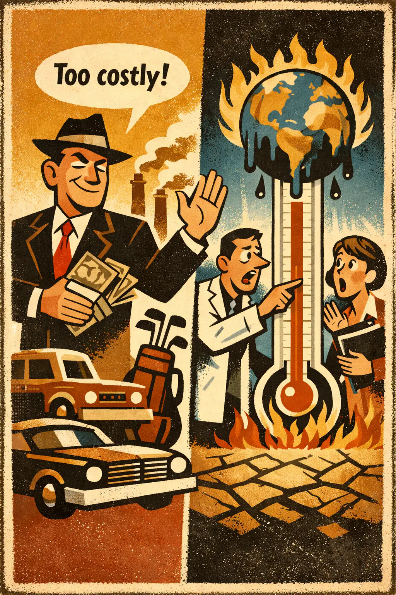
Occurs when a conclusion is pushed mainly by triggering fear, pity, outrage, pride, or hope rather than by showing that the conclusion follows from the evidence.
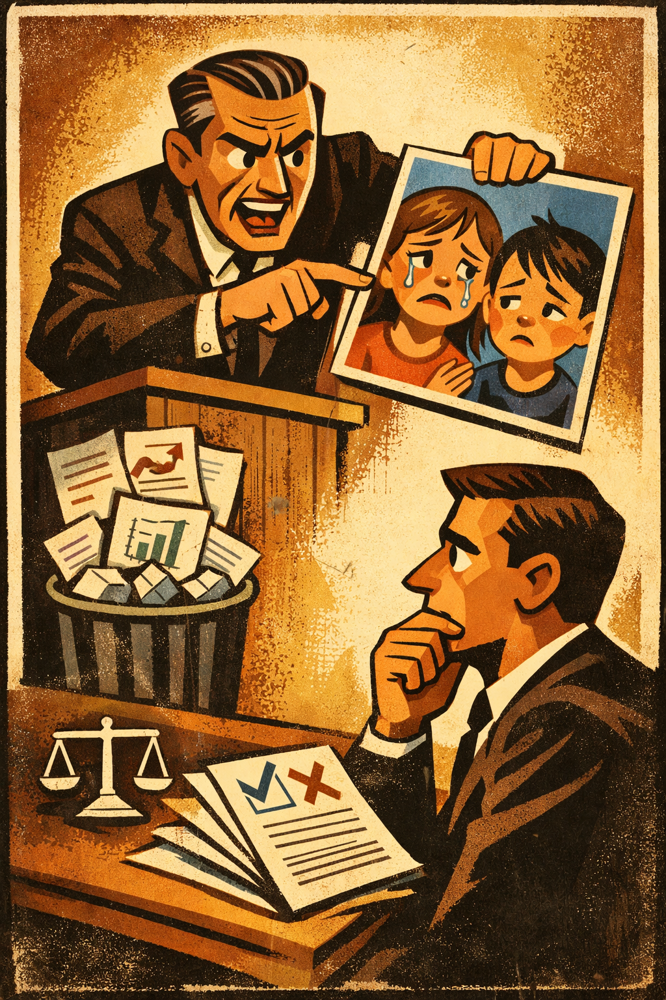
Occurs when someone tries to secure agreement mainly by amplifying danger, threat, or panic rather than by showing that the conclusion is supported.
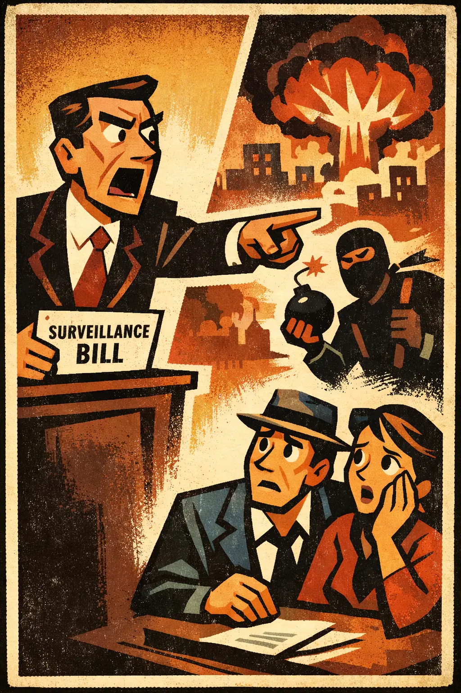
Occurs when someone tries to win agreement by flattering the audience's intelligence, courage, independence, or special insight instead of supplying the missing evidence.
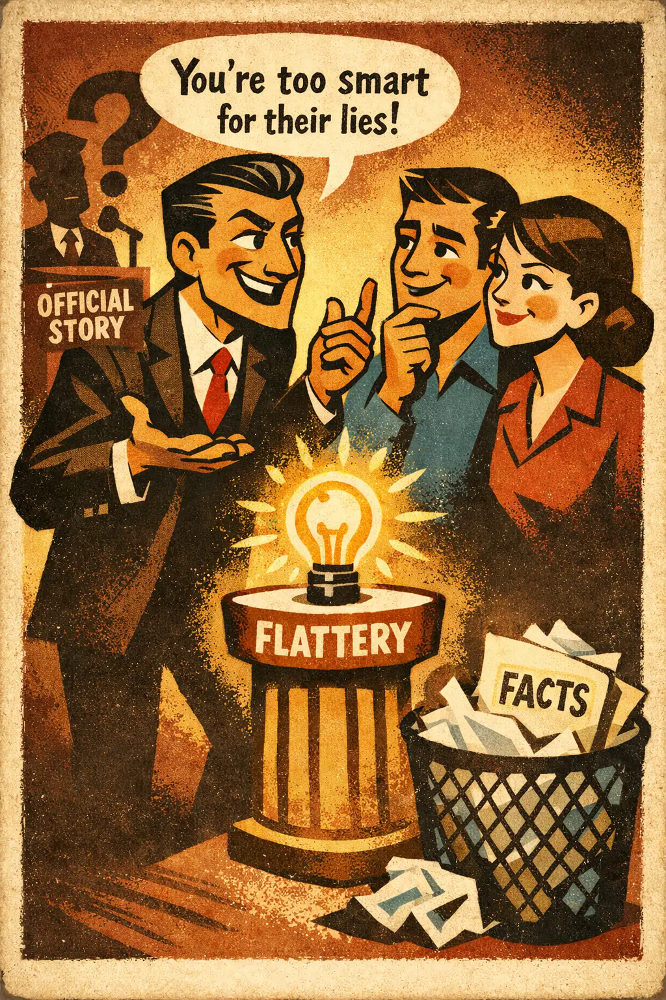
Occurs when a claim is dismissed by speculating about the speaker's motives instead of addressing the claim itself.

Occurs when something is treated as better mainly because it is new, cutting-edge, or marketed as the future.
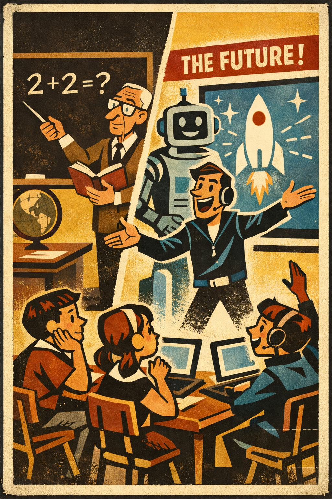
Occurs when sympathy for a person or group is used as if it were evidence that a claim is true or a conclusion follows.
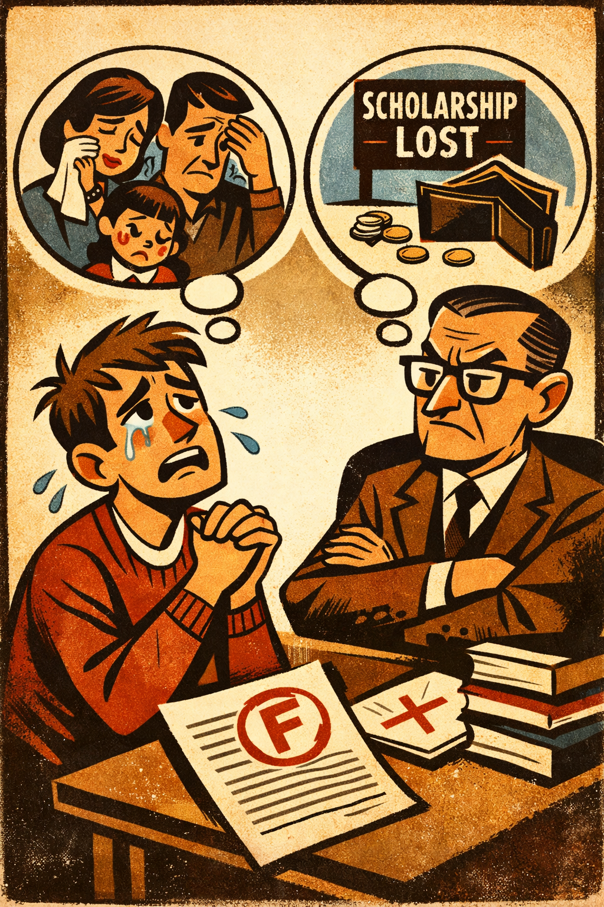
Occurs when mockery, embarrassment, or derision is used in place of showing why a view is false.
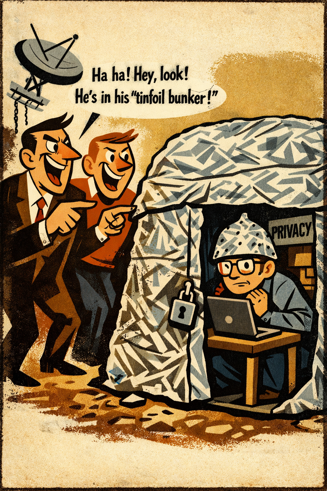
Occurs when resentment, bitterness, or hostility toward another group is used to drive support for a conclusion.
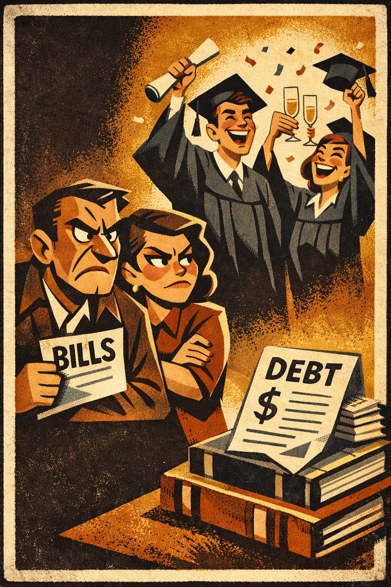
Occurs when a claim or practice is defended mainly because it has a long history, customary status, or familiar place in a community.

Occurs when agreement is extracted by threat, intimidation, or coercive pressure rather than by showing that the claim is true.
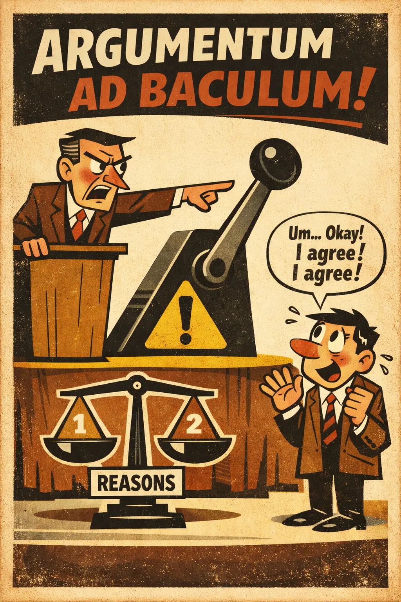
Occurs when a speaker's certainty, intensity, or felt conviction is treated as if it were evidence that the claim is true.
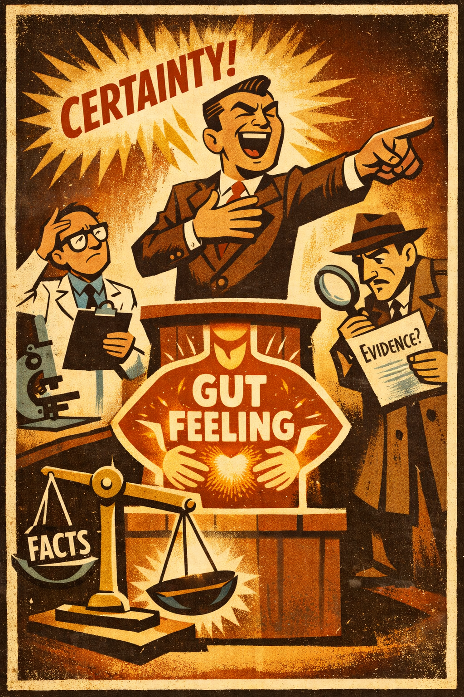
Occurs when someone diverts attention from the unresolved issue by switching to a different issue that is easier, safer, or more emotionally useful.

Occurs when the desirability, comfort, or emotional appeal of an outcome is treated as if that were evidence that the outcome is true, feasible, or justified.
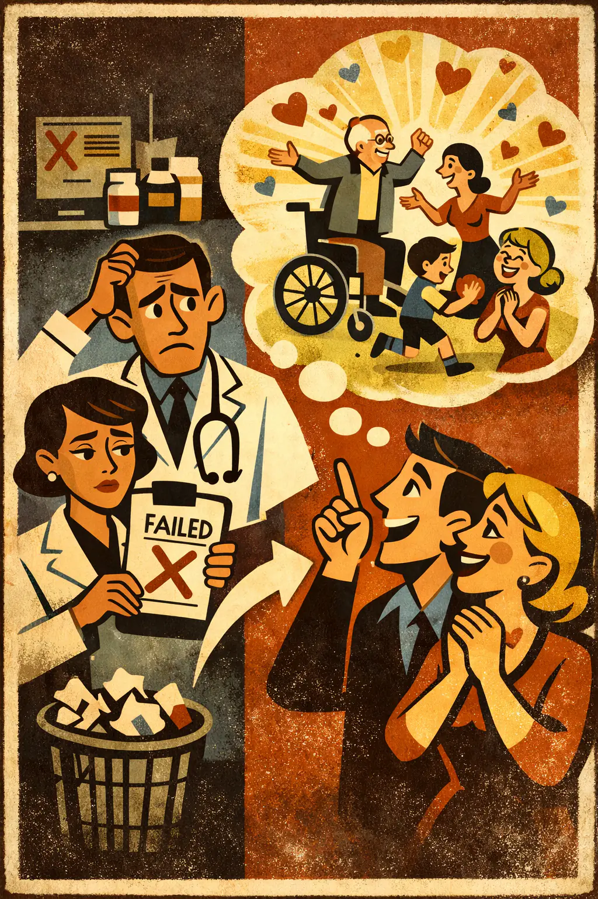
Occurs when a belief or decision is driven mainly by what would be pleasing, hopeful, or comforting if true rather than by what the evidence supports.
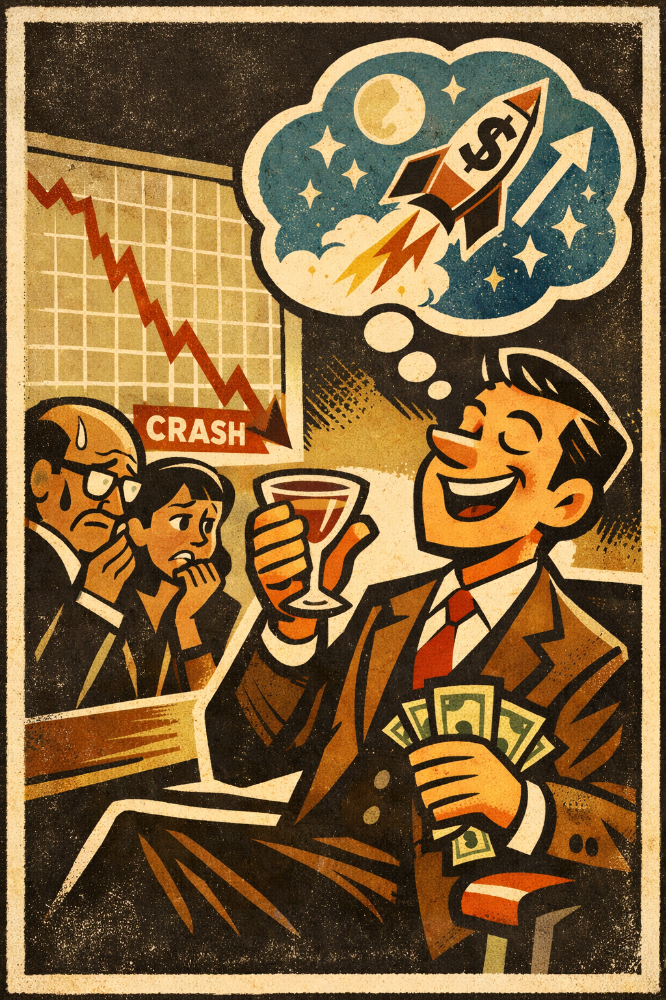